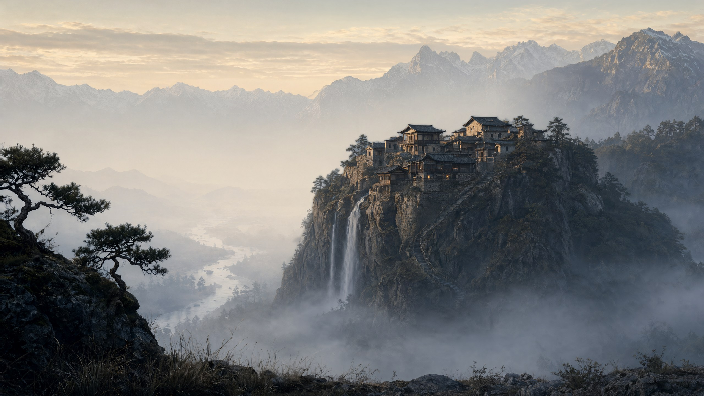

Final still

A cliff monastery above a misty valley. The painting is generated with Qwen Image 2.1 in ComfyUI, given depth with MoGe-2, then split into layers and projected onto 3D geometry in Blender for camera move with parallax. Fog layers at real depths, sun rays, a waterfall, lanterns, birds and swaying pines are added as an FX pass.
